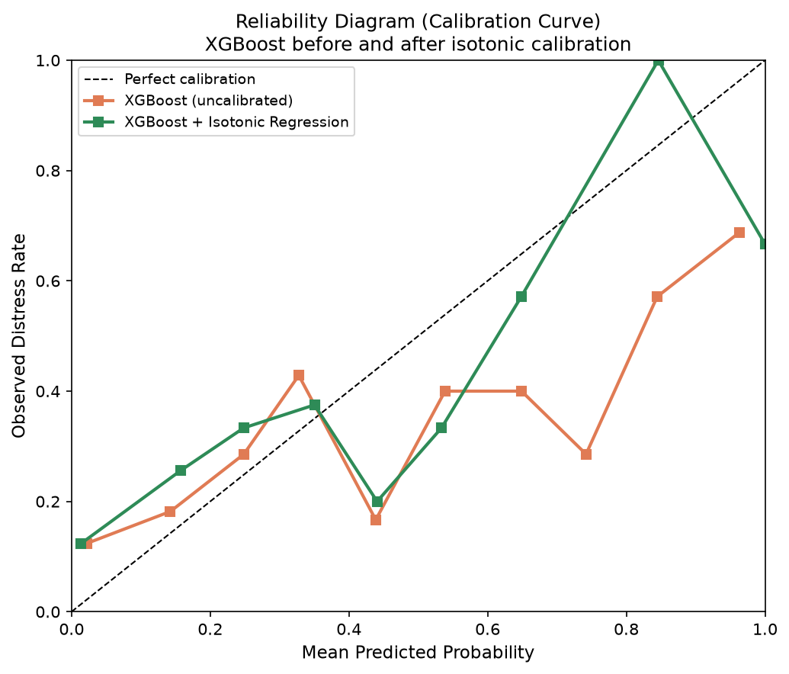

Nonprofit boards rarely lack financial reports. What they often lack is time.
IRS Form 990 filings can surface six to eleven months after a fiscal year closes. They are public eventually, a standard that satisfies archival completeness more readily than operational timing. Audited financial statements are essential, but they describe conditions that have already happened. When a cash crisis finally becomes unmistakable, the range of humane, strategic responses may have narrowed to emergency cuts, borrowing, or program closure.
I built the BEACON Framework around a practical question: Can historical Form 990 data be turned into an early-warning signal that helps leaders intervene before distress becomes failure?
The answer is promising, but conditional. A useful warning system needs more than a classifier. It needs honest validation, probabilities that mean what they appear to mean, explanations that a governance team can examine, and hard boundaries around what the system cannot know.
Start with the decision, not the algorithm
BEACON stands for Business Early-Warning Analytics for Community Organization Navigation. Its focus is U.S. housing and human-service nonprofits—organizations that frequently operate under funding volatility while carrying responsibilities that cannot simply pause when revenue tightens.
The computational pipeline cleans and aligns financial observations, compares three predictive models, calibrates the selected model, and converts its estimated probability into the BEACON Distress Index, or BDI:
A BDI of 70 therefore represents a calibrated estimated probability—not a weighted score assembled from arbitrary point values. The scale groups results into four communication bands: Low Risk from 0–39, Moderate from 40–59, Elevated from 60–79, and Severe from 80–100.
Make the model face forward
A random train-test split would let records from later years influence model development while earlier records sat in the test set. That can produce an attractive score while failing to reproduce the actual task: learning from the past to assess a later, unseen period. Chronology is inconvenient, but remains stubbornly real.
BEACON instead uses a temporal design. Fiscal years 2013–2019 form the training window. Years 2020–2021 are held apart for probability calibration. Years 2022–2023 are the final test window and remain unseen during model fitting. Within the training period, expanding-window time-series cross-validation preserves that same direction of travel.
Logistic regression provides an interpretable baseline. Random forest and XGBoost test whether nonlinear relationships add useful discrimination. In the current framework results, random forest produced the strongest holdout AUC-ROC at 0.717, compared with 0.689 for XGBoost, and became the primary BDI model.
That number is evidence of moderate ranking ability, not a declaration that the problem is solved. AUC asks whether distressed organizations tend to receive higher scores than non-distressed organizations. It does not tell a board whether a reported 70% risk actually occurs about 70% of the time.
Ranking risk is not the same as measuring it
For a governance tool, the difference matters. An uncalibrated model can sort cases reasonably well while being overconfident or underconfident about the probability attached to each case.
BEACON fits an isotonic-regression calibrator on the separate 2020–2021 window. Calibration improved the reported Brier score from 0.229 to 0.195; lower is better. Only after that step does the system multiply the calibrated probability by 100 and label it as the BDI.

Explanation is a layer, not a causal claim
A risk score without a reason is difficult to govern. BEACON uses SHAP values to show which observed financial features pushed a particular prediction higher or lower. Those features are organized after prediction into four domains: Financial Capacity, Financial Sustainability, Resource Dependence, and Organizational Risk.
The domains do not supply weights to the BDI formula. They are an explanatory decomposition applied after the model produces its estimate. This distinction keeps the score statistically grounded while making its drivers legible to a board or executive team.
It also guards against a common mistake: treating an explanation of model behavior as proof of causality. If concentrated revenue pushes a prediction upward, the correct statement is that revenue concentration contributed to this model’s risk estimate. The model has not proven that concentration caused distress or that diversification alone will prevent it.
Cross the last mile with humility
Prediction becomes useful only when it changes the quality or timing of a decision. BEACON’s companion layer—the BEAM Executive Action Matrix—maps prominent risk associations and BDI categories to structured responses. A liquidity signal might prompt a rolling cash forecast and more frequent board reporting. Persistent deficits might trigger program-level analysis and a time-bound recovery plan.
BEAM is deliberately described as a decision taxonomy, not a validated intervention model. The framework has not established that a recommended response will reduce failure rates. Context, professional judgment, stakeholder consequences, and information outside the filing remain indispensable.
What comes next
The public BEACON repository includes a reproducible pipeline, tests, a dashboard, synthetic demonstration data, and pathways for working with real IRS or NCCS data. The current public demo is useful for examining the system’s behavior; it should not be mistaken for a production decision system or an independent validation on every nonprofit population.
The larger research agenda is longitudinal: testing performance on real-world panels, examining subgroup stability, monitoring drift, and learning whether governance teams actually make better decisions when explanations and response structures are introduced.
That is the standard I want to carry into this work. Early-warning analytics should be ambitious about helping people see sooner—and modest about everything a historical filing cannot reveal.
Explore the project
View BEACON on GitHub